← → avanzar · N notas · F pantalla completa · D dibujar (Shift recta · R rojo · C borrar)
Tesis de Maestría en Minería de Datos
Aumentación de datos mediante autoencoders variacionales y su impacto en estrategias de selección de características basadas en algoritmos genéticos
Claudio Sebastian Castillo Director: Dr. Matías Gerard · Codirector: Dr. Leandro Vignolo
Universidad Tecnológica Nacional, Facultad Regional Paraná · 2026
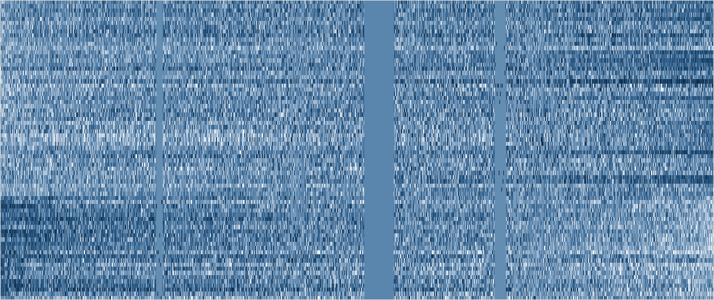
Microarreglos de ADN. Leukemia (Golub et al., 1999): 72 pacientes × 7.129 genes.Video. Cada fotograma: 640 × 360 píxeles × 3 canales = 691.200 variables. Big Buck Bunny, Blender Foundation, CC BY 3.0.
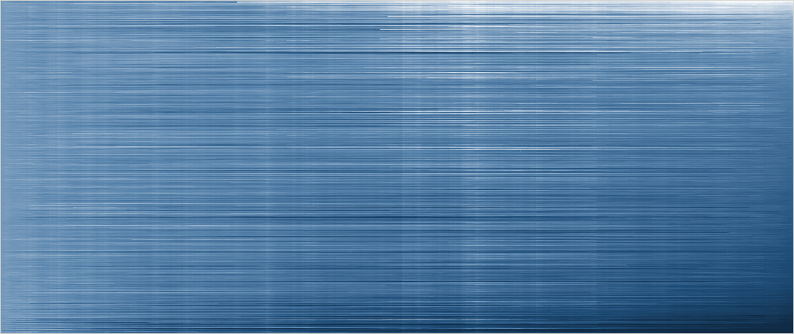
Finanzas. S&P 500: 476 acciones × 1.259 días de cotización, 2013 a 2018.
Maldición de la dimensionalidad
Alta demanda computacional y costo de optimización en espacios de muchas variables, que vuelven intratables ciertos problemas en la práctica (Bolón-Canedo et al., 2015).
Selección de características
Determinar un subconjunto de atributos que satisfaga uno de estos criterios (Vignolo y Gerard, 2017):
el subconjunto de un tamaño especificado que maximice la precisión de la predicción;
el subconjunto de menor tamaño que satisfaga un requisito de precisión mínima;
el subconjunto que logre el mejor compromiso entre dimensionalidad y precisión.
Alta dimensionalidad y escasez muestral
n ≫ mn características, m observaciones
Sobreajuste a las observaciones disponibles, o incapacidad de capturar la estructura subyacente de los datos.
agravagenera dispersión de las muestrasmultiplica las variables irrelevantes
Desbalance de clases
mmayoritaria ≫ mminoritariadistribución de clases altamente desigual
La evaluación prioriza la clase mayoritaria y descarta características útiles para las minoritarias.
Complejidad
Frontera de decisión difícil de identificartres aspectos, que pueden coexistir
Ambigüedad de clases, complejidad de las fronteras y dispersión de las muestras.
Ruido
x̃ = x + εvalores imperfectos por medición, transcripción o transmisión
Características irrelevantes o redundantes mezcladas con las relevantes.
Los cuatro problemas organizan la tesis y la elección de los conjuntos de datos; la aumentación ataca el primero.
Filtro
Rápido y escalable; no usa el clasificador.
Univariados: ignoran las dependencias entre variables. Multivariados: las miden con un criterio estadístico, no con el desempeño del modelo.
Envolvente
Captura las dependencias entre variables.
Costo exponencial: 2n subconjuntos posibles.
Embebido
Menor costo que el envolvente.
Específico de cada modelo.
Con n = 16.063 genes, la búsqueda exhaustiva es intratable: se recurre a heurísticas de búsqueda.
Método envolvente + heurística de búsqueda = algoritmo genético(Vignolo y Gerard, 2017).
La escasez de datos no limita al algoritmo de búsqueda, sino a la estimación de aptitud que lo guía.
Técnica
Mecanismo
Con n ≫ m
SMOTE
Interpola entre vecinos cercanos de la clase minoritaria; solo rebalancea clases.
Las distancias pierden sentido; sin beneficio salvo selección previa de variables (Blagus y Lusa, 2013).
GAN
Un generador aprende a engañar a un discriminador que separa muestras reales de sintéticas.
Entrenamiento inestable y colapso de modos con pocas muestras; sin codificador (Fajardo et al., 2021).
AV
Codifica cada observación como una distribución latente y decodifica muestras de ella.
Entrenamiento estable; latente continuo; el paso codificar-decodificar atenúa el ruido (Fajardo et al., 2021; Ai et al., 2023).
En las comparaciones directas, el AV condicional fue el mejor generador frente a SMOTE y GAN (Fajardo et al., 2021). Antecedentes en respaldo.
Datos originalespartición de entrenamiento
AV / AVCaprende la distribución de los datos
Muestras sintéticasgeneradas desde el espacio latente
Datos aumentadosoriginales + sintéticos
AGselección con clasificador MLP
Subconjunto de características
El AV se entrena únicamente con la partición de entrenamiento.
La exactitud se mide siempre en la partición original de testeo, sin datos sintéticos.
Objetivo general
Evaluar el impacto de la aumentación de datos mediante AV sobre el desempeño de estrategias de selección de características basadas en AG.
Objetivos específicos
Integrar estrategias de aumentación basadas en AV en los AG.
Evaluar el desempeño de las estrategias propuestas en conjuntos de datos de diferente complejidad.
Comparar el AG con datos aumentados frente al mismo AG sin aumentación.
Hipótesis. Aumentar sintéticamente las muestras permite al AG identificar subconjuntos más relevantes, con mejor exactitud y eficiencia de selección.
L(θ, φ) = Σi ‖xi − Dφ(Cθ(xi))‖²
Error de reconstruccióncuadrado de la distancia euclídea, sumado sobre el conjunto de entrenamiento
La pérdida solo compara entrada y salida: sin restricción sobre la estructura del espacio latente, que puede ser discontinuo.
L(θ, φ) = Σi
‖xi − Dθ(zi)‖²
Reconstrucciónerror cuadrático, como en el autocodificador
+
KL( qφ(z|xi) ‖ N(0, I) )
Regularizaciónmantiene cada distribución codificada cerca de la normal estándar
Cada observación se codifica como una distribución, no como un punto;z = μ + σ · ε permite retropropagar a través del muestreo. Generación:z ∼ N(0, I) y decodificar.
KL: divergencia de Kullback-Leibler.
La etiqueta de clase se concatena a la entrada del codificador y a la del decodificador.
Pesos de clase inversos a la frecuencia en la reconstrucción: los errores en las clases minoritarias pesan más.
Muestreo ponderado por clase en cada mini-lote: las clases minoritarias entran con mayor probabilidad.
Permite generar muestras por clase en problemas desbalanceados.
Cuatro propiedades (Goldberg)
Opera sobre una codificación de las soluciones.
Evalúa una población, no un punto único.
Usa una función de aptitud, sin derivadas.
Aplica reglas de transición probabilísticas.
Adecuado para espacios de búsqueda discretos, no diferenciables y multimodales.
Codificación binaria
X1X2X3X4X5X6X7
Genotipo1100101
Fenotipo: {X1, X2, X5, X7}
Subconjunto de variables con el que se entrena el clasificador.
Cruce de dos puntos
Padre 11100101
Padre 20111000
Hijo 11111001
Hijo 20100100
Mutación por inversión de bits
Original1100101
Mutado1100001
Cada bit se invierte con una probabilidad fija.
Selección: quién se reproduce
RuletaProbabilidad de ser elegido proporcional a la aptitud. Favorece con fuerza a los más aptos; reduce la diversidad.
Torneo · empleada en la tesisSe sortean k individuos al azar y pasa el mejor. El tamaño del torneo regula la presión de selección.
VentanaLa población se divide en grupos y se toma el mejor de cada uno. Preserva la diversidad entre regiones del espacio de búsqueda.
La longitud del cromosoma es igual al número de variables: 7.129 bits en Leukemia, 16.063 en GCM. La proporción de bits activos en la inicialización define el tamaño del subconjunto explorado.
Desempeño predictivo
Exactitud del subconjunto encontrado, medida en la partición original de testeo. En los problemas multiclase la aptitud usa exactitud balanceada.
Reducción de variables
Número medio de características seleccionadas en la población final.
Estabilidad
Dispersión de la exactitud y del número de variables entre corridas independientes: desviación estándar y rango intercuartílico.
Los tres criterios no varían conjuntamente; se reportan por separado.
Conjunto
Tema
Observaciones × características
Clases
Desafío principal
Leukemia
Expresión génica; ALL frente a AML
72 × 7.129
2, desbalanceado
Más variables que observaciones; correlación entre genes
Gisette
Dígitos manuscritos; 4 frente a 9
13.500 × 5.000
2, balanceado
Ruido y redundancia en un espacio de búsqueda grande
Madelon
Artificial; XOR en 5 dimensiones
2.000 × 500
2, balanceado
20 variables con señal y 480 de ruido
GCM
Expresión génica; 14 tipos de tumor
190 × 16.063
14, desbalanceado
Más variables que observaciones; multiclase con desbalance
ALL Leukemia
Expresión génica; LLA pediátrica
327 × 12.600
7, desbalanceado
Más variables que observaciones; multiclase. Validación del flujo
Leukemia (Golub et al., 1999), GCM (Ramaswamy et al., 2001), ALL Leukemia (Yeoh et al., 2002); Gisette y Madelon, desafío NIPS 2003. En todos los experimentos se respetan las particiones originales de entrenamiento y testeo.
Conjunto
Métrica
Mejor resultado
Rango de la mayoría de los modelos
Lectura
Leukemia
AUC
1,00 (Bagging, Random Forest, SVC)
0,85 a 1,00
Cercano a la saturación
Gisette
AUC
1,00 (Gradient Boosting)
0,92 a 0,99
Cercano a la saturación
Madelon
AUC
0,91 (Bagging)
0,57 a 0,70
Margen de mejora amplio
GCM
Macro-F1
0,71 (SGD); 0,68 (MLP)
0,48 a 0,62
Margen de mejora amplio; clases con F1 nulo
Dieciocho modelos de scikit-learn con búsqueda en grilla, sobre una partición 80/20. Tabla 2.1 de la tesis.
Codificador. Tres capas lineales, cada una con normalización por lotes y ReLU.
Espacio latente. μ y log σ² mediante dos capas lineales independientes.
Decodificador. Simétrico al codificador. Pérdida: error cuadrático medio + divergencia KL.
Conjunto
Modelo
Neuronas en capas 2 y 3
Dimensión latente
Tasa de aprendizaje
Épocas
Leukemia
AV
346, 178
108
2,7 · 10⁻⁴
2.889
Madelon
AV
835, 308
25
1,6 · 10⁻⁴
1.364
Gisette
AV
3.870, 2.987
18
9,5 · 10⁻⁴
2.739
GCM
AVC
358, 189
35
6,9 · 10⁻⁴
3.613
ALL Leukemia
AVC
434, 176
35
4,0 · 10⁻⁴
949
Optimizador Adam, parada temprana e hiperparámetros por búsqueda en grilla y optimización bayesiana. En multiclase, error de reconstrucción balanceado por clase. Tabla 4.1 de la tesis.
Por diseño, el AG resigna parte de la exactitud a cambio de una menor dimensionalidad.
El mismo AG, con y sin aumentación, evaluado siempre en la partición original de testeo.
Cada corrida completa del AG es una observación: exactitud media de la población final.
Comparación de distribuciones entre grupos: gráficos de cajas, test t de Welch y test de Mann-Whitney.
1. SelecciónAG sobre el espacio completo de variables.Salida: las características más frecuentes en los cromosomas finales.
2. GeneraciónAVC entrenado en el subespacio seleccionado.Salida: muestras sintéticas balanceadas por clase.
3. SelecciónAG final sobre datos originales y sintéticos.Salida: subconjunto de características.
Conjunto
Subespacio de la etapa 1
Muestras sintéticas de la etapa 2
GCM
1.600 características, obtenidas de 590 cromosomas
3.000, balanceadas por clase
ALL Leukemia
Características obtenidas de 3 corridas del AG
1.000
Ejecución en la nube: 8 vCPU y 30 GB de memoria.
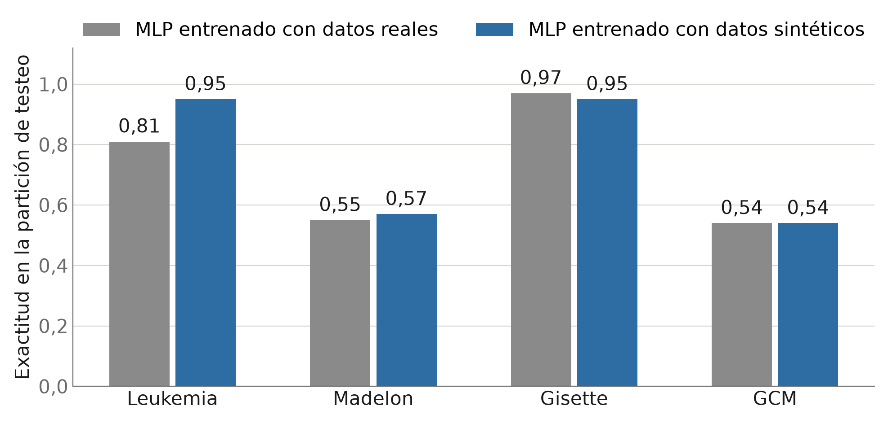
Ambos modelos se evalúan en la partición original de testeo. Figura 3.4 de la tesis.
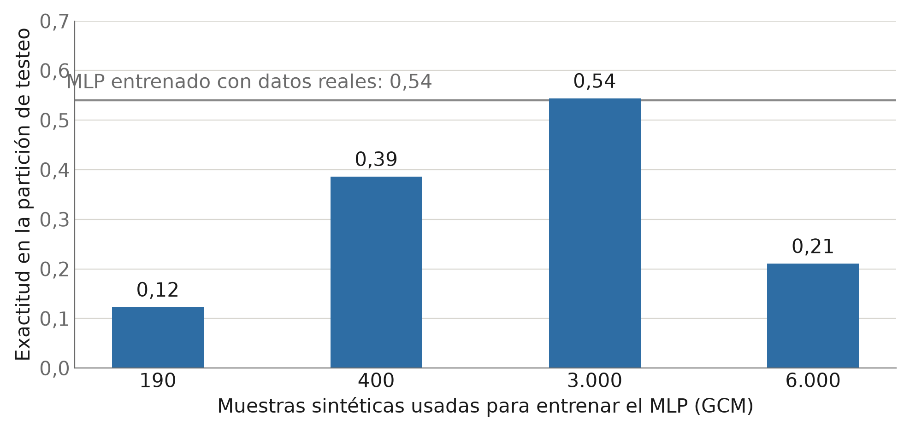
Con 3.000 muestras balanceadas (214 por clase) se iguala al MLP entrenado con datos reales; con 6.000, la exactitud se degrada.
Un espacio latente de 35 dimensiones superó a las configuraciones de más de 50. Figura 3.5 de la tesis.
Conjunto
Corridas con / sin
Exactitud sin aumentación
Exactitud con aumentación
Diferencia (puntos porcentuales)
p
Lectura
Leukemia
90 / 90
0,989
0,992
+0,3
0,09
Saturado, sin cambio
Gisette
13 / 12
0,959
0,960
+0,1
0,63
Saturado, sin cambio
Madelon
30 / 49
0,750
0,828
+7,8
< 0,001
Mejora significativa
GCM, segunda etapa
9 / 10
0,497
0,541
+4,4
0,005
Mejora significativa
ALL Leukemia
18 / 18
0,669
0,672
+0,3
0,87
Sin cambio
Test t de Welch con las corridas del AG como unidad de observación. El test de Mann-Whitney conduce a la misma conclusión en todos los casos.
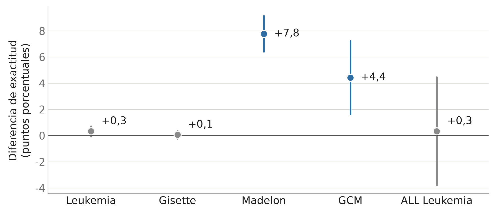
Diferencia de medias (con aumentación menos sin aumentación) e intervalo de confianza del 95%. Donde el intervalo incluye el cero no hay evidencia de efecto.
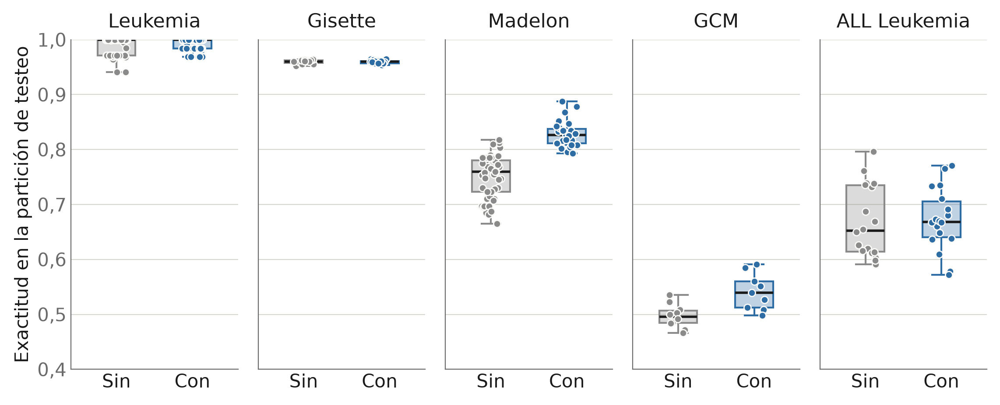
Problema saturado: sin cambio.
Margen de mejora y reconstrucción adecuada: mejora.
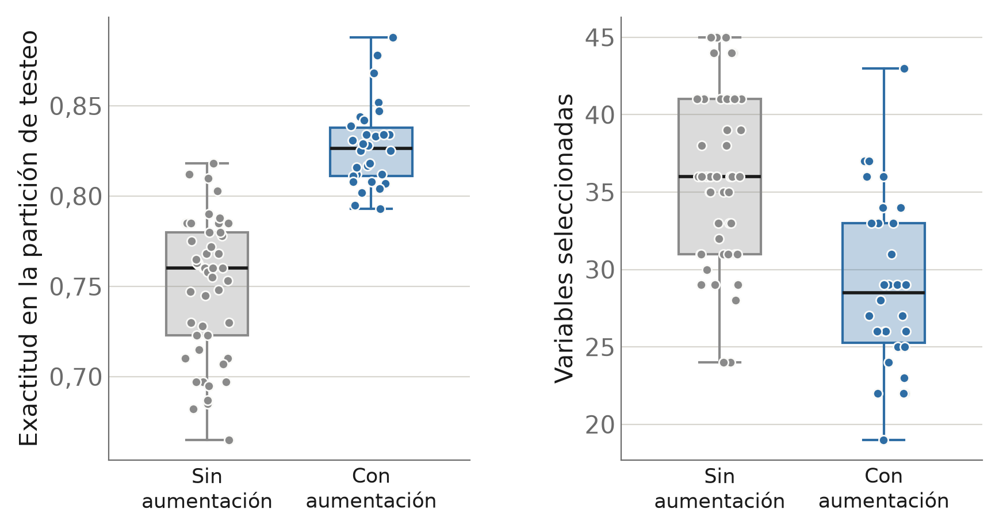
+7,8puntos porcentuales de exactitud 0,750 → 0,828 (p < 0,001)
29variables seleccionadas en promedio, frente a 36 sin aumentación
30 corridas con aumentación y 49 sin aumentación. La desviación estándar de la exactitud también disminuye: 0,023 frente a 0,038.
Los datos sintéticos realzan la señal que el AG debe encontrar. Esquema ilustrativo de la interpretación propuesta en la tesis; no es un resultado medido.
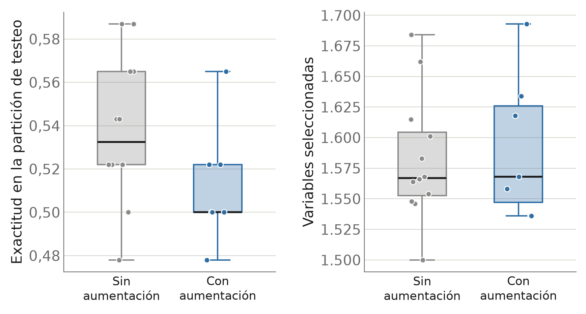
0,538exactitud sin aumentación
0,512exactitud con aumentación
1.400 muestras sintéticas (100 por clase) más 133 originales; cromosomas de aproximadamente 1.600 genes; 20 generaciones. Figura 4.10 de la tesis.
100%exactitud en la partición sintética de testeo
50%exactitud en la partición real de testeo
MLP entrenado con 3.000 muestras sintéticas. Tabla 4.4 de la tesis.
La distribución sintética es internamente consistente y de menor complejidad que la real: permite igualar al MLP entrenado con datos reales, no superarlo ni guiar mejor al AG.
Explicación plausible: colapso de la distribución posterior. La divergencia KL domina la pérdida y la reconstrucción deja de representar los datos reales.
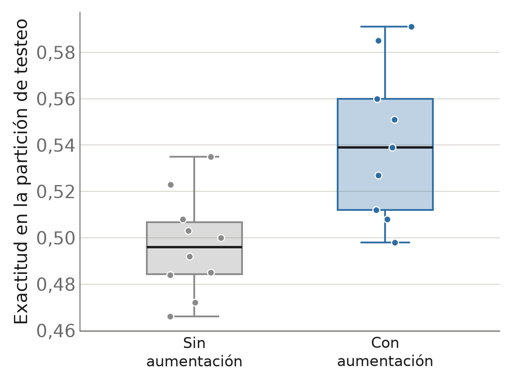
+4,4puntos porcentuales de exactitud 0,497 → 0,541 (p = 0,005)
9 corridas con aumentación y 10 sin aumentación, con cromosomas de aproximadamente 450 y 750 genes.
Número de variables sin cambio dentro de cada tamaño de cromosoma: 454 frente a 462, y 785 frente a 781.
AVC entrenado sobre las 1.600 características más frecuentes; 3.000 muestras sintéticas balanceadas por clase; 15 generaciones. Figura 4.11 de la tesis.
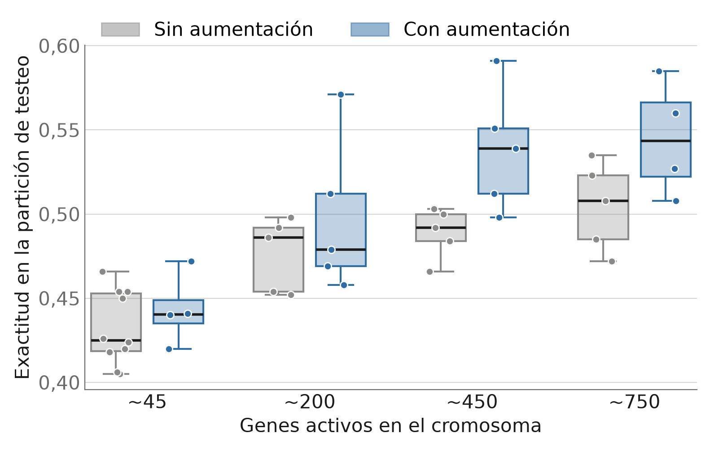
Genes activos
Corridas con / sin
Sin aum.
Con aum.
p
~45
4 / 10
0,432
0,443
0,43
~200
5 / 5
0,476
0,498
0,38
~450
5 / 5
0,489
0,538
0,035
~750
4 / 5
0,505
0,545
0,10
Exactitud media por grupo. Solo el tamaño ~450 alcanza significación estadística por sí solo.
Figura 4.12 de la tesis, redibujada con los mismos datos.
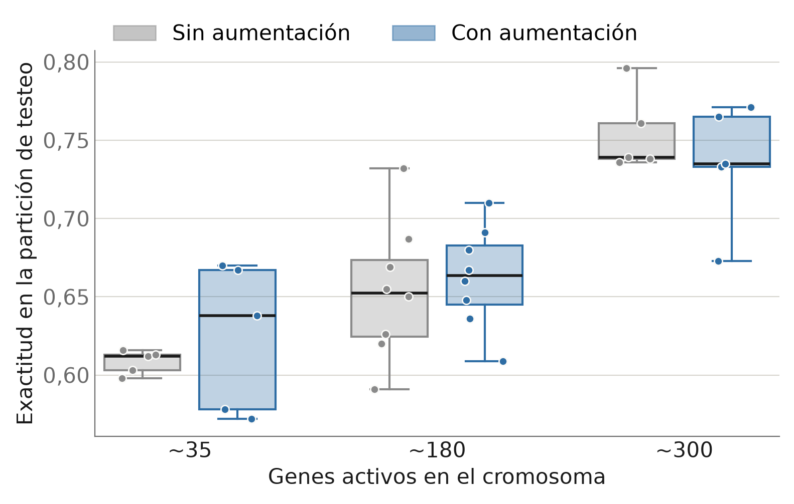
Genes activos
Corridas con / sin
Sin aum.
Con aum.
p
~35
5 / 5
0,608
0,625
0,48
~180
8 / 8
0,654
0,663
0,65
~300
5 / 5
0,754
0,735
0,40
Exactitud media por grupo. Ninguna diferencia es estadísticamente significativa.
Mismo flujo que en GCM: AVC sobre el subespacio seleccionado, 1.000 muestras sintéticas, 15 generaciones. Figura 4.13 de la tesis, redibujada con los mismos datos.
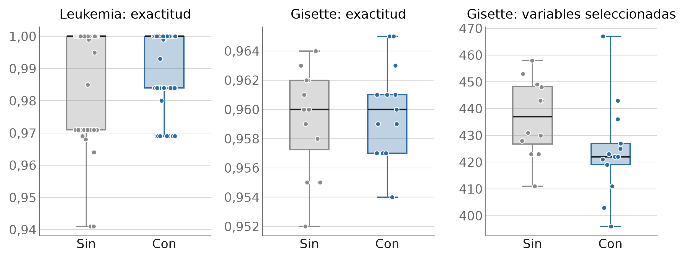
Leukemia. Desviación estándar de la exactitud: 0,011 con aumentación frente a 0,016 sin aumentación.
Gisette. 424 variables seleccionadas frente a 437; rango intercuartílico de 8 frente a 21.
Conjunto
Desempeño predictivo
Reducción de variables
Estabilidad de la exactitud
Leukemia
Sin diferencia (p = 0,09)
Igual (259 y 259)
Mejora(0,011 frente a 0,016)
Gisette
Sin diferencia (p = 0,63)
Mejora(424 frente a 437)
Mejora leve(0,003 frente a 0,004)
Madelon
Mejora(p < 0,001)
Mejora(29 frente a 36)
Mejora(0,023 frente a 0,038)
GCM, segunda etapa
Mejora(p = 0,005)
Igual (454 y 462; 785 y 781)
Empeora (0,033 frente a 0,022)
ALL Leukemia
Sin diferencia (p = 0,87)
Igual (174 y 173)
Mejora leve(0,056 frente a 0,065)
En cada celda, el valor con aumentación precede al valor sin aumentación. Estabilidad: desviación estándar de la exactitud entre corridas.
Mejora
La aumentación mejora la exactitud donde existe margen de mejora y el AV reconstruye adecuadamente: Madelon y GCM en segunda etapa.
Sin cambio
No modifica la exactitud en problemas saturados (Leukemia, Gisette); aporta estabilidad.
Condición
En problemas multiclase desbalanceados requiere generar sobre un subespacio seleccionado y calibrar la cantidad de muestras.
Los datos sintéticos generados por un AV o AVC adecuadamente configurado son aptos para el entrenamiento: un MLP entrenado únicamente con sintéticos alcanza la exactitud del entrenado con reales en Leukemia, Madelon y GCM.
La aumentación mejora la selección con AG cuando el problema tiene margen de mejora y el AV reconstruye adecuadamente: +7,8 puntos porcentuales en Madelon y +4,4 en GCM, ambos significativos.
En problemas saturados no modifica la exactitud; reduce la dispersión y, en algunos casos, el tamaño del subconjunto.
En problemas multiclase desbalanceados, el flujo selección-generación-selección es la condición para que la aumentación resulte útil; aplicar el AVC sobre el espacio completo la perjudicó.
Cinco conjuntos de datos, dos de ellos artificiales; el efecto depende de la dificultad del problema.
Número reducido de corridas en GCM y ALL Leukemia (5 a 10 por configuración) y particiones de testeo pequeñas.
El efecto depende de la calidad del AV: con una reconstrucción deficiente, la aumentación perjudica el resultado.
Existe un umbral de muestras sintéticas más allá del cual el resultado se degrada.
Un único clasificador en la función de aptitud (MLP) e hiperparámetros ajustados por conjunto, no transferibles sin reajuste.
Función de pérdida del AV. Reponderar reconstrucción y divergencia KL; inferencia variacional recocida; AV jerárquicos para datos como GCM.
Integración AV-AG. Selección dinámica en varias etapas y optimización conjunta de ambos modelos.
Encadenamientos y ensambles de AV y AG para reducir la varianza.
Comparación con SMOTE y otros generadores dentro del mismo flujo con AG.
Tesis de Maestría en Minería de Datos
Aumentación de datos mediante autoencoders variacionales y su impacto en estrategias de selección de características basadas en algoritmos genéticos
Muchas gracias
Claudio Sebastian Castillo Director: Dr. Matías Gerard · Codirector: Dr. Leandro Vignolo
Código: github.com/castillosebastian/ealab
Conjunto
MLP, todas las variables (capítulo 3)
AG sin aumentación
AG con aumentación
Variables usadas por el AG
Leukemia
0,81
0,989
0,992
30 a 680 de 7.129
Gisette
0,97
0,959
0,960
437 y 424 de 5.000
Madelon
0,55
0,750
0,828
36 y 29 de 500
GCM
0,54
0,497
0,541
450 a 780 de 16.063
ALL Leukemia
sin medición
0,669
0,672
35 a 300 de 12.600
Referencias externas. GCM: 78% con SVM uno contra todos sobre los 16.063 genes (Ramaswamy et al., 2001). Madelon: error balanceado cercano a 0,07 en los mejores resultados del desafío NIPS 2003. Leukemia: predictor de 50 genes (Golub et al., 1999).
La función de aptitud pondera la reducción de variables con peso 0,5: el AG resigna exactitud por diseño.
Blagus y Lusa, 2013
SMOTE no aporta beneficio en alta dimensionalidad con pocas muestras, el escenario de Leukemia, GCM y ALL Leukemia.
Fajardo et al., 2021
El AV condicional supera al sobremuestreo aleatorio, a SMOTE y a las GAN en MNIST desbalanceado.
Ai et al., 2023
Los AV guiados superan a otros métodos de sobremuestreo en datos tabulares e imágenes.
SMOTE rebalancea clases; la tesis aplica la aumentación también a problemas balanceados. La comparación con SMOTE dentro del mismo flujo no se realizó y queda como trabajo futuro.
Comparación
Corridas con / sin
Diferencia (puntos porcentuales)
IC 95%
Welch, p
Mann-Whitney, p
Cromosomas de ~450 y ~750 genes
9 / 10
+4,4
1,6 a 7,3
0,005
0,005
Toda la segunda etapa
18 / 25
+4,0
1,1 a 7,0
0,008
0,011
La unidad de observación es la corrida completa del AG.
El cálculo original de la tesis usó como tamaño muestral la cantidad de observaciones de los conjuntos (3.133 y 133). Recalculada con las corridas, la diferencia se mantiene significativa.
Modelo
Leukemia (AUC)
Madelon (AUC)
Gisette (AUC)
GCM (macro-F1)
Modelos lineales
LDA
0,85
0,60
0,96
—
QDA
0,50
0,66
0,70
—
Ridge
0,99
0,60
0,97
—
SGD
0,98
0,64
0,99
0,71
Árboles
AdaBoost
0,91
0,84
0,99
—
Bagging
1,00
0,91
—
—
Árbol de decisión (DTC)
0,72
0,64
0,92
0,53
Árbol extra (ETC)
0,54
0,57
0,94
0,48
Extra Trees (ensamble)
1,00
0,71
0,99
0,57
Gradient Boosting
0,99
0,82
1,00
0,58
Random Forest
1,00
0,78
0,99
0,62
Modelo
Leukemia (AUC)
Madelon (AUC)
Gisette (AUC)
GCM (macro-F1)
Máquinas de vectores de soporte
LSVC
0,99
0,62
0,99
0,62
NuSVC
1,00
0,61
0,99
0,58
SVC
1,00
0,61
0,99
0,58
Naive Bayes
Bernoulli (BNB)
0,89
0,63
0,94
—
Gaussiano (GNB)
0,91
0,65
0,85
—
Vecinos más cercanos
KNN
0,86
0,65
0,99
—
Redes neuronales
MLP
0,96
0,58
0,99
0,68
En azul, el mejor resultado de cada conjunto. Un guion indica que el modelo no se evaluó en ese conjunto. Tabla 2.1 de la tesis.
Leukemia
Entrenamiento
Clase
Precisión
Recall
F1
Datos reales
0
0,76
1,00
0,87
1
1,00
0,56
0,71
Datos sintéticos
0
0,93
1,00
0,96
1
1,00
0,89
0,94
Exactitud: 0,81 con datos reales y 0,95 con datos sintéticos. Tabla 3.1 de la tesis.
GCM
Clase
Soporte
MLP con datos reales
MLP con datos sintéticos
Precisión
Recall
F1
Precisión
Recall
F1
0
4
0,14
0,25
0,18
1,00
0,25
0,40
1
1
0,00
0,00
0,00
0,00
0,00
0,00
2
3
1,00
1,00
1,00
1,00
0,67
0,80
3
6
1,00
0,33
0,50
1,00
0,17
0,29
4
8
0,89
1,00
0,94
1,00
1,00
1,00
5
3
0,40
0,67
0,50
0,43
1,00
0,60
6
5
0,80
0,80
0,80
1,00
0,80
0,89
7
4
0,50
0,75
0,60
0,10
0,25
0,14
8
4
0,33
0,25
0,29
0,67
0,50
0,57
9
3
0,25
0,67
0,36
0,50
0,33
0,40
10
4
1,00
0,25
0,40
0,00
0,00
0,00
11
3
1,00
0,67
0,80
1,00
0,67
0,80
12
4
1,00
0,25
0,40
1,00
0,75
0,86
13
5
1,00
0,20
0,33
0,21
0,60
0,32
Promedio macro
57
0,67
0,51
0,51
0,64
0,50
0,50
Exactitud: 0,54 en ambos casos. Tabla 3.4 de la tesis.
Trabajo
Qué hace
Resultado y relación con la tesis
Fajardo et al., 2021
AV condicional, GAN, SMOTE y sobremuestreo aleatorio sobre versiones desbalanceadas de MNIST y Fashion-MNIST; MLP como clasificador.
El AV condicional fue el mejor generador. Origen de la prueba de evaluación del capítulo 3: MLP entrenado con sintéticos y evaluado con reales.
Ai et al., 2023
MGVAE: AV guiado por la clase mayoritaria; se preentrena con la mayoría y se ajusta con la minoría.
Supera a otros sobremuestreos en imágenes y datos tabulares (exactitud balanceada, ACSA, media geométrica).
Khmaissia y Frigui, 2023
AV entrenado con las muestras mal clasificadas o de baja confianza; aumentación semisupervisada.
Mejoras en STL10 y CIFAR-100. Aumentación dirigida a las regiones difíciles del espacio de características.
Martins et al., 2022
AV para generar variantes de proteínas (luxA) y AG mono y multiobjetivo para optimizarlas.
El AG guiado supera al muestreo directo del AV. El antecedente más cercano: combina AV y AG, aunque para diseño de proteínas y no para selección de características.
Ningún antecedente combina AV y AG para selección de características; esa integración es el aporte de la tesis.
1 · ObjetivoMáxima verosimilitud
maxθ log pθ(x)
Elegir θ para que el modelo asigne la mayor probabilidad posible a las observaciones reales.
2 · ImpedimentoLa integral sobre z
pθ(x) = ∫ pθ(x|z) p(z) dz
No se puede calcular: sin fórmula, porque el integrando contiene la red Dθ; sin aproximación numérica, porque z tiene decenas de dimensiones y casi ningún z del prior produce x. Lo que no se calcula no se diferencia.
Sí se puede calcular: un solo z sorteado del codificador qφ(z|x), que propone z adecuados para esa x, y una KL entre normales con fórmula cerrada.
4 · AlcanceUna cota, no la verosimilitud
log pθ(x) − ELBO = KL( qφ(z|x) ‖ pθ(z|x) )
La brecha es el error del codificador respecto de la posterior verdadera. Maximizar la cota eleva la verosimilitud y reduce la brecha, sin garantizar que llegue a cero.
El logaritmo convierte el producto de las probabilidades de todas las observaciones en una suma, sin cambiar el máximo. La pérdida de la diapositiva 11 es el negativo de la cota: −ELBO = error cuadrático + KL.